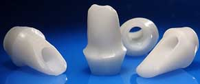

NobelProcera has proved itself as the Messiah of prosthetics, with a complete range that demonstrates excellence in precision of fit, biocompatibility and esthetics.
Crowns and bridges
: NobelProcera offers crown and bridges in zirconia, alumina and titanium. Zirconia is available in four shades: white, light, medium and intense. Alumina is available in two shades: white and translucent.
NobelProcera bridges on natural teeth are custom designed, all-ceramic, restorations, milled from pre-sintered blanks of zirconia and/or alumina. The material homogeneity of these blank delivers maximum biomechanical strength and allows for high precision of fit, which assist in providing optimal soft tissue support and esthetics.
NobelProcera Bridges Titanium is made out of a homogeneous block of titanium. The extra strength provided satisfies all clinical, esthetics and budgetary requirements.
Laminates
: NobelProcera Laminates are 0.25 mm. thin, veneers made from alumina that have been designed to cover only the outside of natural teeth. Laminates possess excellent masking capabilities and are applied using standard tooth preparation and bonding techniques.
A: Board prosthetic versatility
- Natural-tooth or implant-retained prosthetics for all patient clinical and esthetic needs.
B: Optimal veneering thickness
- Prosthetics are designed so veneering layer thickness is uniform to prevent chipping.
C: Conventional crown and bridge techniques
- Tooth preparation and cementation routines are similar to those used for conventional cast restorations.
D: CAD/CAM Precision of fit
- Increases efficiency by eliminating the need for time-consuming adjustments prior to placement.